Ford Explorer 3.0 EcoBoost PHEV 4WD ST-Line
69000 PLN
73 000 km
Ford Explorer – Przestronny SUV z 2020 roku, łączący nowoczesną technologię z komfortem i bezpieczeństwem. Auto sprowadzone w oryginale z USA jako Policyjne. Wszystko sprawne i działające. Używane głównie pod imprezy okolicznościowe typu wesela - bardzo rzadko. Idealnie dla osoby lubiącej się wyróżniać. Wersja 3.0 EcoBoost PHEV 4WD ST-Line oferuje dynamiczną jazdę dzięki napędowi na cztery koła oraz automatycznej skrzyni biegów. Idealny wybór dla osób ceniących sobie wszechstronność, moc oraz bogate wyposażenie.
- Wersja: 3.0 EcoBoost PHEV 4WD ST-Line
- Rok produkcji: 2020
- 5 drzwi
- 5 miejsc siedzących
- Napęd: stały na cztery koła
- Skrzynia biegów: automatyczna
- Paliwo: hybryda plug-in
- Pojemność silnika: 2998 cm³
- Moc systemowa: 457 KM
- Kolor: czarny
- Felgi aluminiowe 20"
- Tapicerka skórzana
- Automatyczna klimatyzacja
- System multimedialny z nawigacją, Apple CarPlay, Bluetooth, USB
- Kamera 360°, kamera cofania, czujniki parkowania przód/tył, asystent parkowania
- Systemy bezpieczeństwa: ABS, ESP, asystent pasa ruchu, systemy pre-crash, kontrola trakcji, rozpoznawanie znaków, asystent martwego pola, system ostrzegania o kolizji, tempomat adaptacyjny
- Podgrzewane i wentylowane fotele przednie z masażem, elektryczna regulacja foteli z pamięcią ustawień
- Podgrzewana tylna kanapa, podgrzewana kierownica, czujnik deszczu, przyciemniane szyby
- Światła LED, światła do jazdy dziennej LED, podgrzewana przednia szyba
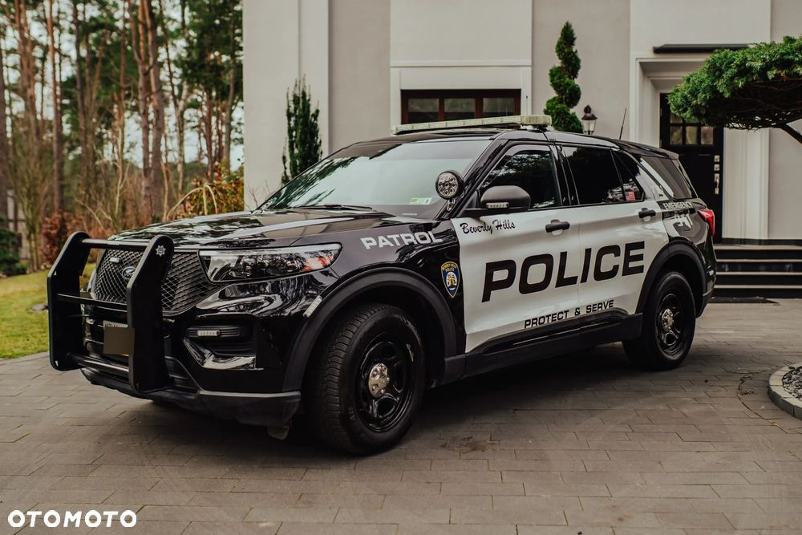
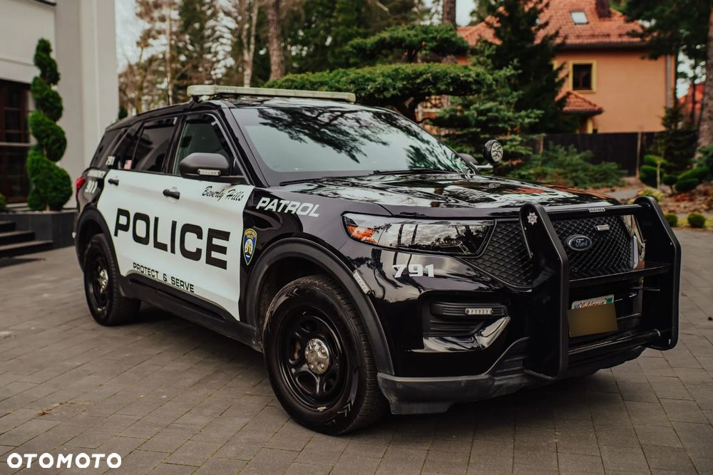
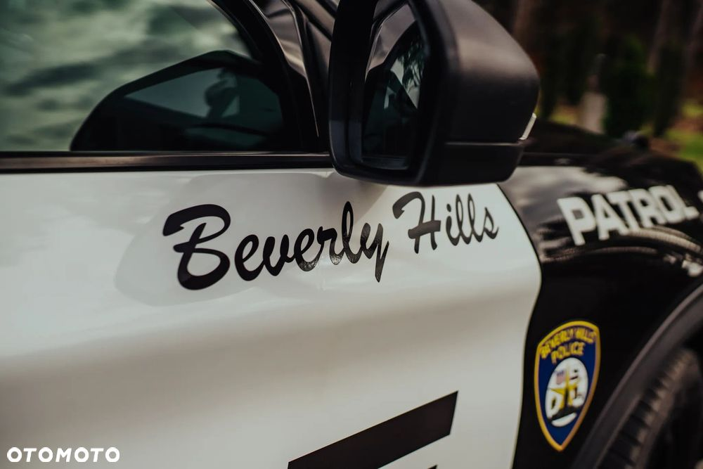
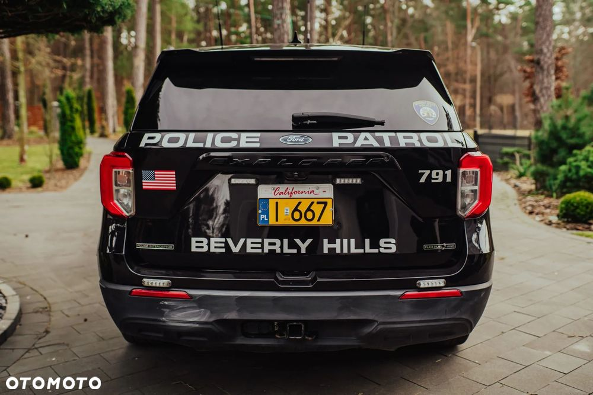
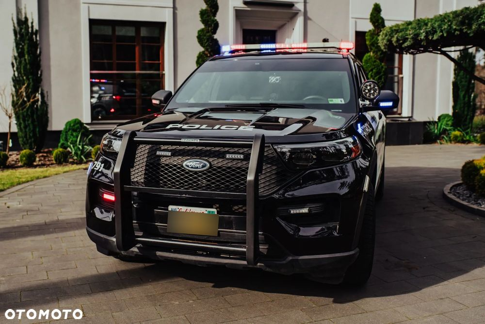
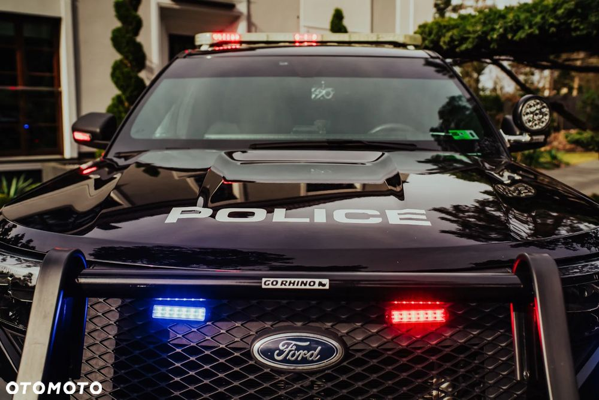
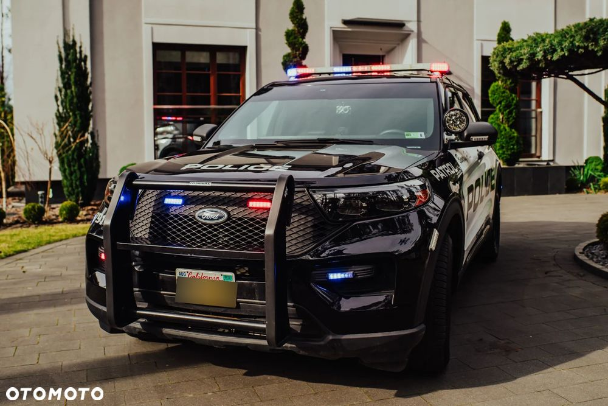
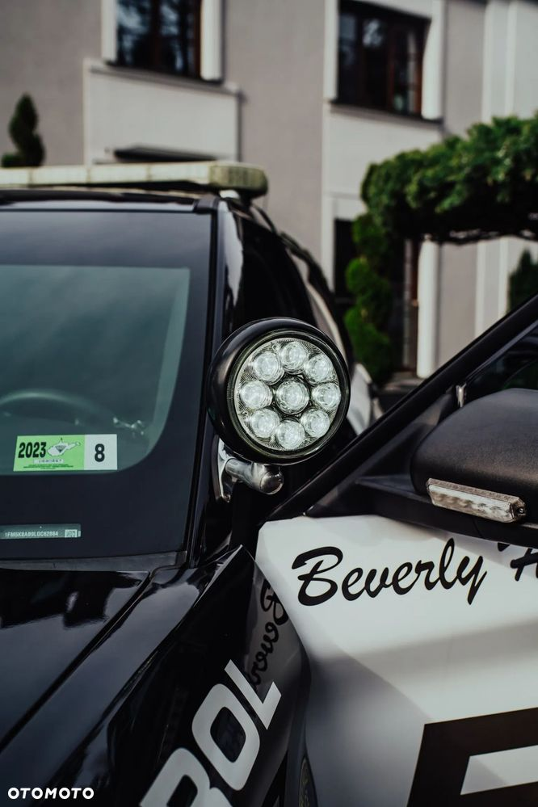
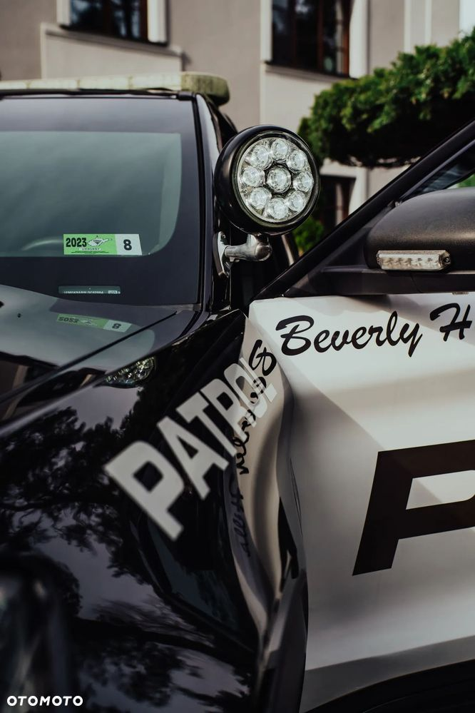
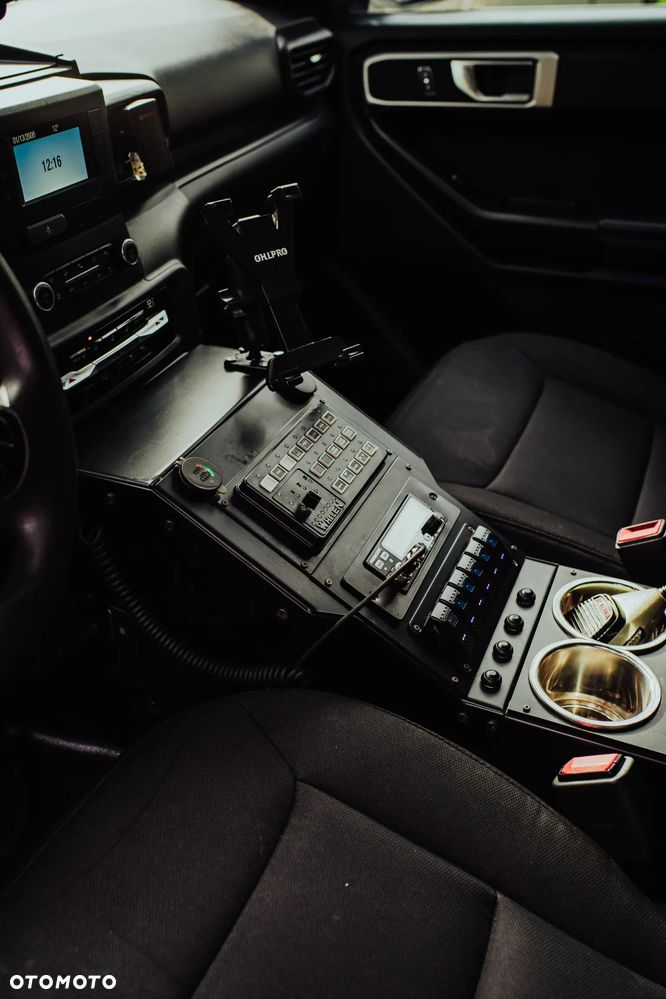
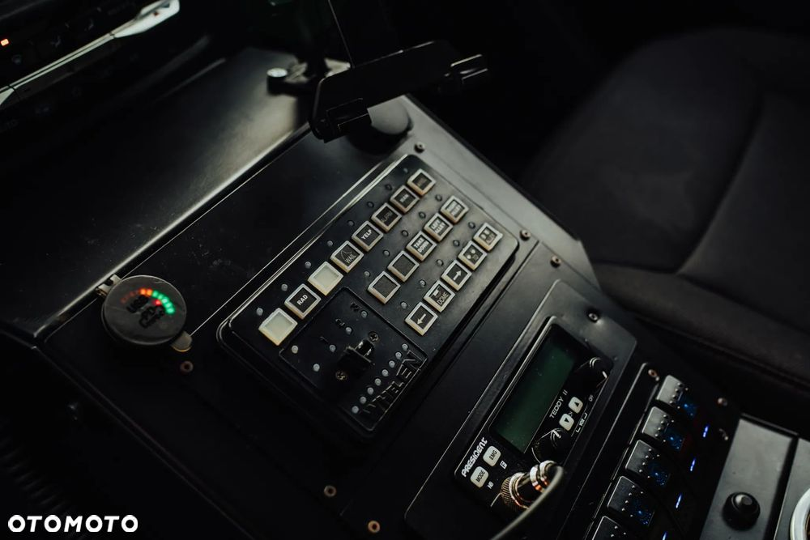
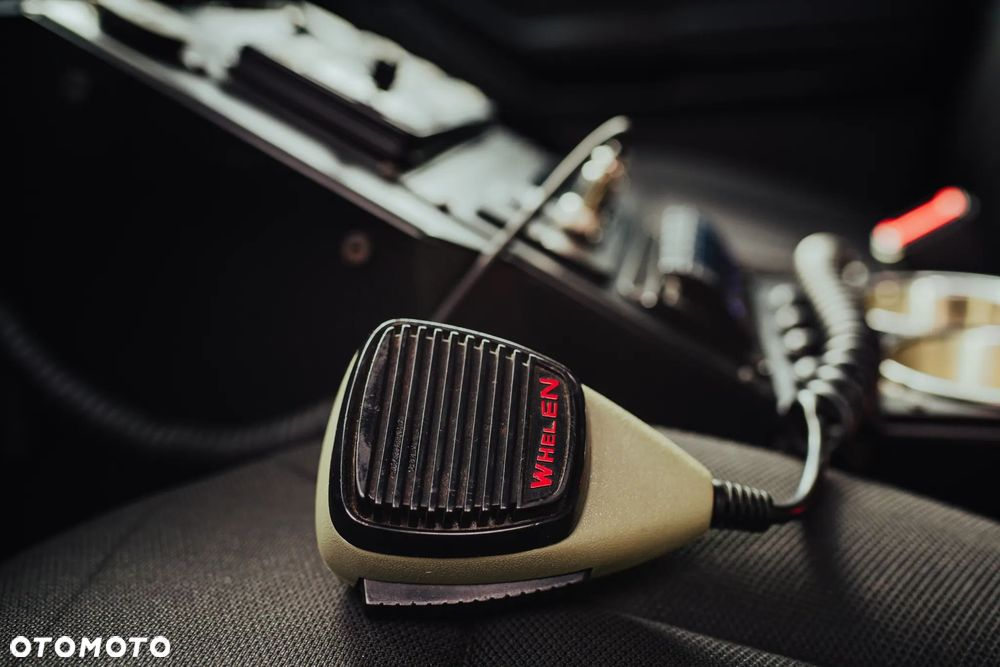
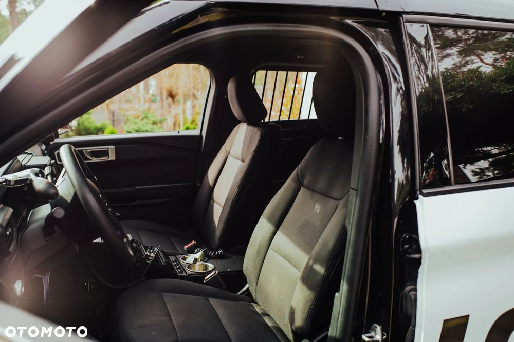